01Every brand picks a proof object
This isn't a ranking. Manychat isn't competing with Sunsama. I'm interested in the question underneath: how does each brand make invisible value feel real? Some show the mechanism. Some let a designed output be the proof. Some make a business outcome visible.
Here's how I read it: each brand picks a proof object, one concrete thing in the frame that does the convincing so the copy doesn't have to (Interpretation).
The DM
A comment turning into an instant reply
The creator
A real story standing in for the product
The email
The design is the promise
The payout
Revenue and audience size made visible
The plan
One calm day instead of scattered tools
The use case
Specific workflows under a broad AI promise
The handwritten note
The product on a real screen, annotated like a friend's tip
The task
An action moving from request to done
I'd love to tell you which of these ads is making money. I can't. This is a curated sample, not verified winners.
02Scope, method, disclosures
- Sample
- A curated selection, not a representative review of every ad a brand runs
- Method
- Each ad decoded for hook, audience problem, promise, visual, offer, CTA and visible date, then compared within its category
- Evidence rule
- What's visible in the ad is kept separate from my interpretation. Presence, repetition or longevity doesn't prove profitability
- AI & authorship
- The research, direction, core idea and analysis are mine. AI helped organise and sharpen the writing; it wasn't a source of performance data
03Marketing automation
On paper, all four could be filed under “email or messaging automation”. Their ads don't look alike. And none of them is really selling automation.
| Brand · dates | What the ads say | Creative direction I see |
|---|---|---|
| Manychat · Aug–Oct 2026 | “Every missed connection is a lost customer”; comment-to-DM, quick replies, FAQ automation | Direct-response and mechanism-led: a familiar seller problem leads straight into a visible workflow |
| Kit · from Oct 8, 2026 | “Your business grows 24/7 while you focus on what you love”; creator stories; automation templates | Creator story meets problem-solving: relief from manual work, and the opportunity in an existing audience |
| Flodesk · Aug–Sep 2026 | “Your brand, exactly as you imagined it”; “What if your emails looked as good as your feed?” | Design-led identity. The email itself is the proof |
| beehiiv · Oct 5–20, 2026 | “Get paid every time you hit send” with payout visuals; a 7-figure newsletter story | Monetisation and scale. Payouts need context so exceptional outcomes don't read as typical |
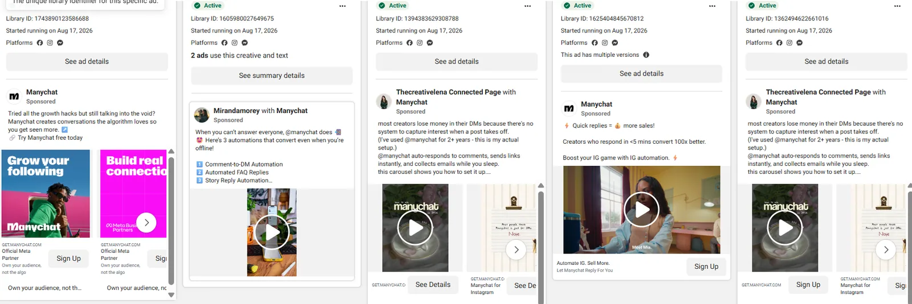
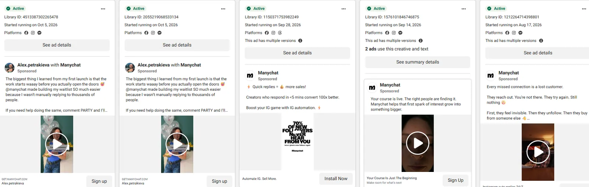
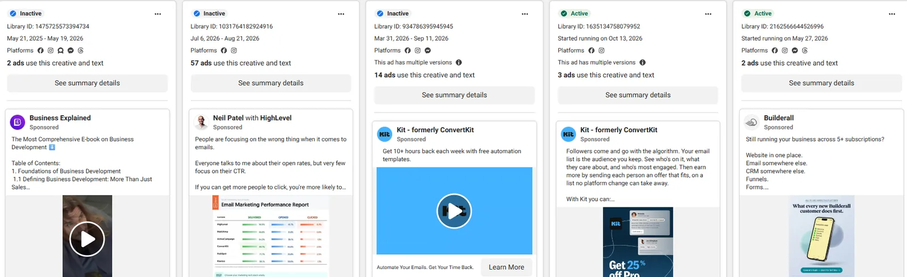
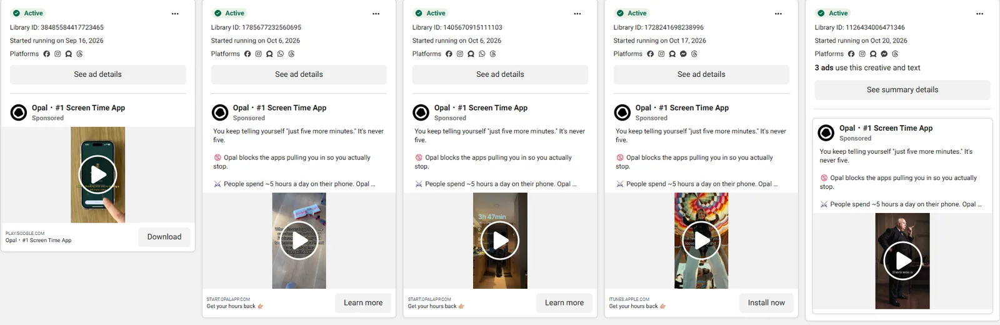
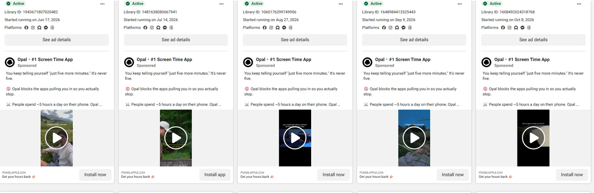
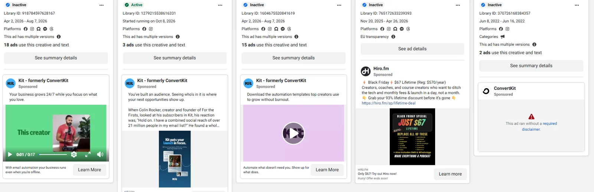
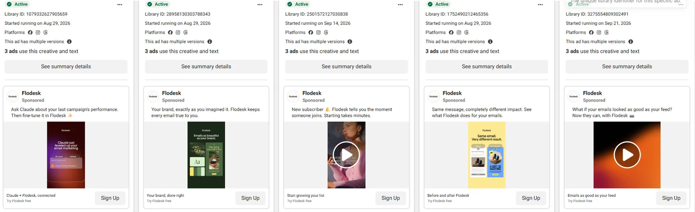
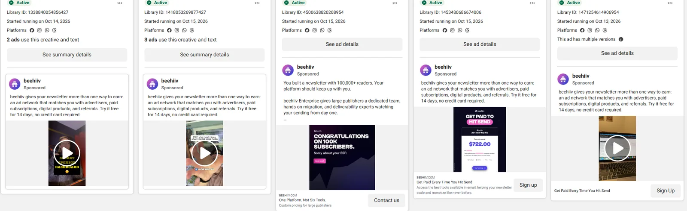
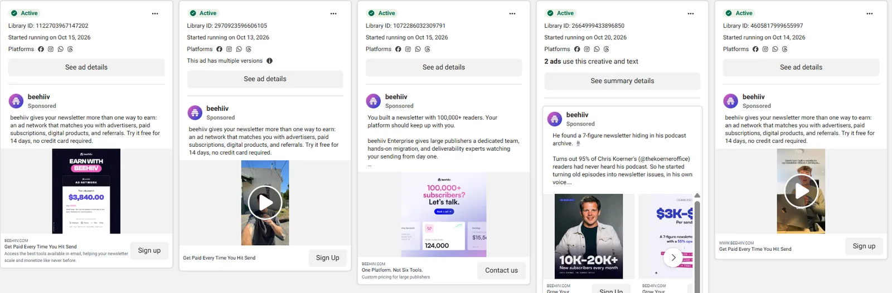
Representative Meta Ad Library captures. Close variants within a capture aren’t automatically unique concepts. Click to enlarge.
04Productivity SaaS
Same category, four different front doors.
| Brand · dates | What the ads say | Creative direction I see |
|---|---|---|
| Sunsama · Dec 2025; Jun–Oct 2026 | “Before the day starts running you, make a plan for it”; “The workday ends but the work doesn't” | Simple and angle-focused. Planning, scattered tools and closure, never a feature tour |
| Notion · Aug 5–Oct 15, 2026 | “Unlock the power of AI at work”; custom agents for reports and ticket triage | AI-led breadth. The core message stays fixed while workflows vary underneath |
| Motion · Dec 2023–Apr 2026 | “Get 25% more done”; handwritten notes like “my calendar literally creates itself” | One fixed promise, many lo-fi executions. Reads like a friend's tip, not an ad |
| Todoist · from Oct 8, 2026 | “Connect Todoist to Claude and create, assign and check off tasks…” | Integration-led. Strongest when a real task visibly moves from request to done |
What customers say
“I'm spending more time bouncing between them than actually getting work done.”
r/ProductivityApps“I end up building templates instead of doing actual work.”
r/ProductivityApps“I usually stop when maintaining the task system starts feeling like a second job.”
r/ProductivityAppsWhat I notice: nobody is asking for more features. They're tired of the tool becoming the work.

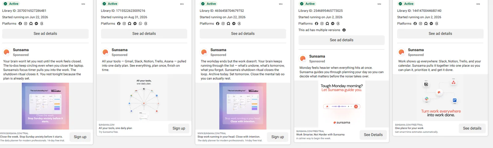
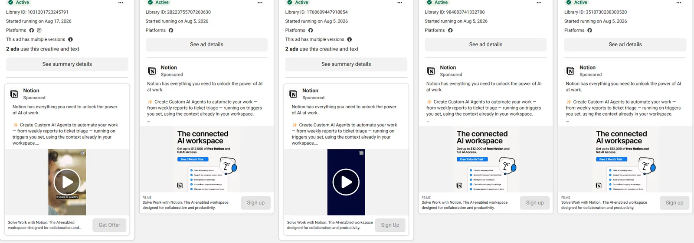
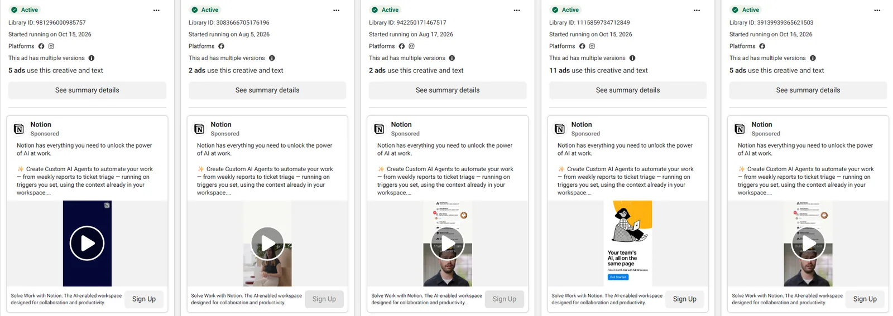
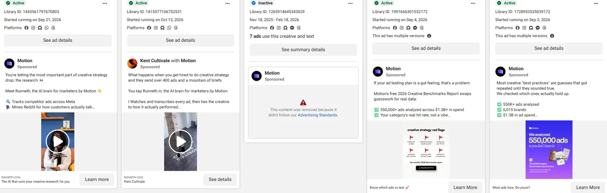
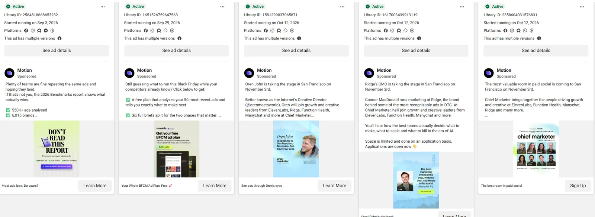
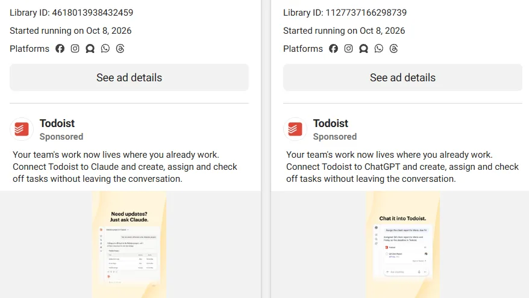
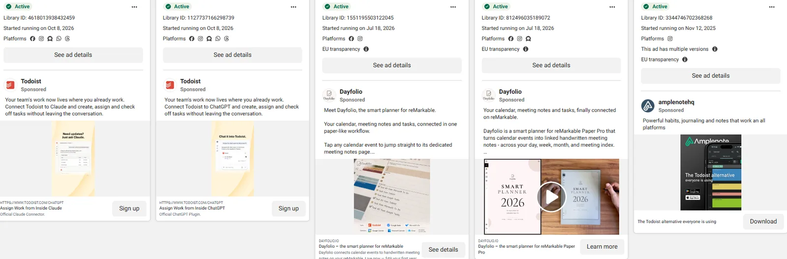
Representative Meta Ad Library captures. Repeated territories inform the qualitative read; they don’t prove performance.
05Where the two categories meet
Different products, different buyers. Same problem underneath: software is abstract, and a static ad has one frame to make it concrete. A feature list tells you what the product can do. A proof object lets you picture it doing it for you.
| Pattern | Seen in | What I'd take from it |
|---|---|---|
| Show the mechanism | Manychat | Input → automated response → next step |
| Make the promise tangible | beehiiv | Show the outcome, with context |
| Use the output as proof | Flodesk | Let the output carry the claim, not adjectives |
| Keep the promise focused | Sunsama | One static, one legible angle |
| Make the workflow concrete | Todoist | One specific task moving through |
06Creative opportunity library
The part I enjoyed most: turning what I saw into what I'd test. None has been tested yet, so treat them as questions I'd love answered.
Built on observed patterns
Show the mechanism
A 3-step static: trigger → product action → customer outcome. KPI: outbound CTR.
Missed moment → recovered
A missed DM beside the automated reply. A specific loss should beat generic claims.
The output is the proof
The email, plan or finished output as the hero visual. KPI: landing-page view rate.
One audience, one use case
One static for a single role and situation, so a broad product feels personal.
Behaviour-first hook
Open on a recognisable habit or frustrating moment, then bring in the product.
Integration in action
A task entering one tool and finishing through the integration, not a logo wall.
My fresh hypotheses
Calm the feature overload
Swap a feature list for one task and one outcome.
Objection in one frame
Headline one likely objection; answer it with a product fact.
Time reclaimed, not promised
Show the repetitive task disappearing, with no unsupported numbers.
Hidden cost of the workaround
The manual workaround beside the product-enabled alternative.
Trust cue beside the claim
Pair a verifiable trust cue with the exact claim it supports.
CTA specificity
Generic CTA vs one that names the next step or immediate value.
07How I'd measure the tests
| Stage | Metrics | Decision discipline |
|---|---|---|
| Initial creative read | Outbound CTR, landing-page view rate | Directional diagnostics, not success metrics |
| Conversion | Trial start, qualified signup or lead event | Compare variants only with audience, budget and landing page controlled |
| Quality | Activation, trial-to-paid, cost per qualified outcome | Never call a winner on CTR alone |
08Let me be honest
- Screenshots prove visible copy, format and dates, not campaign performance.
- Repeated variants suggest a maintained message, not a proven winner.
- “100x better”, “25% more done” and payout amounts are ad claims, not validated.
- The selection favoured interesting angles over a random sample.
So: twenty ideas, zero performance data and a lot of screenshots. That's the honest state of it.